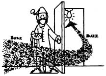

After a long, dusty day of working in the garden, about all that most of us can think of is a good hot bath. "But wait!" says Pat Mestern of Fergus, Ontario, Canada. "Raid your herb border first . . . that is, if you want the most refreshing and sensuous ablutions you've ever enjoyed. Gather a goodly bunch of mint, or lemon balm, or fruit sage, or chamomile. Tie the sprigs together (picking 'em at least five inches long makes it easier) and toss the aromatic bundle into your tub under the running water. A marvelous aura of herbs will permeate the steam while you soak and soap . . . especially if you use your bouquet garni as a gentle sponge." It sounds downright habit forming, Pat!
Last spring, when Paul Lish's pussycat had a "brief encounter" with a skunk under the Lish trailer out in Inkom, Idaho, Paul and his wife were literally "gassed" out of house and home. Airing the place did precious little but make it cold . . . and when they closed the doors and windows again, the overpowering fragrance returned. Paul's native American co-worker, however, had the remedy: Burn cedar or juniper wood in the stove . . . with the damper almost closed so the smoke would fill the house.
Mrs. Lish was skeptical about applying this piece of Indian lore (she fretted over the likelihood of sooty ceilings and drapes) .. but-as Paul pointed out-they had to do something: They couldn't afford to trade in their home on a new one, and they couldn't live in the place as long as it smelled the way it did. So Paul and his wife cedar-smoked that trailer-inside and underside-and behold, the malodorous "eau de polecat" was gone, leaving their dwelling only pleasantly redolent of cedar . . . and with no blackened interior after all!
Would you believe that Vern Johnson of Bettendorf, Iowa has discovered that his living room wall has 100% fewer cavities after regular brushing with Crest! Vern says that just about any kind of white toothpaste makes an excellent spackling compound for patching small holes and cracks in plaster walls. "It works very well," says Vern, "and it dries surprisingly hard." Johnson adds that toothpaste cures slower than commercial wall spackle, but this only makes it easier to apply and smooth out. And sanding will not be required at all if you blend the paste into the plaster by rubbing the filler with a little water. This "bathroom spackle" takes paint very well and can be cleaned from tools and brushes quite easily with just a little washing. Vern also reminds us about the old trick of using toothpaste to shine rings and other delicate pieces of gold jewelry.
Furthermore, as long as you've got that tube of denture-dazzler in hand, you might as well search around and find that perfectly good watch with the badly scratched crystal . . . or the favorite pair of sunglasses that you just can't see through anymore. John Corbin of Sumter, South Carolina recommends buffing the murky glass with a high-abrasive toothpaste-or one of the newer tooth polishes-to erase those troublesome scarifications. One caution in working with watches, though: Be sure to wipe off any excess completely if the timepiece ain't waterproof!
And here's another unusual way to use commercial dentifrice: Raylene Van Ness of Trout Creek, Montana puts it on mosquito bites! "I dab some on ... and the itching ceases immediately," she says. "The bumps will be gone by the next day." (Now if we could just get the little critters to brush before every meal, maybe they'd produce itchless bites in the first place!)
Naturally, we'd all like to find a way to avoid those bitingbug "blues in the night" in the first place. "You don't have to drape a mosquito net over your bed or inhale insect spray till the wee hours to get your beauty sleep," says Miami, Florida's Robert E. Moffett (and who should know better than a Floridian?). "When you're fixin' to retire for the night, simply turn off ail the lights in the house . . . except for one in an open closet. All the winged beasts in the vicinity will answer that hospitable summons and-in 20 minutes or so-you'll be able to turn off the beacon, shut the door on the pesky critters, and hit the sack in peace."
What can you do if the yeast doesn't work in a batch of bread? (It sure is discouraging when the dough just sits there and won't rise.) Well, don't feed that sullen lump to the pigs just yet. Do what Pat McGinnity of Midland, Michigan does .. . make crackers! Here's how: Roil the dough out as thin as you can and cut it into squares or rectangles. Or use cookie cutters, plain or fancy (how about animal shapes, just for fun?). Then spread the cutouts apart on cookie pans . . . poke 'em several places with a fork . .. sprinkle salt with a light hand ... and bake the crackers in a 300°F oven till they just begin to brown. Pat promises these snacks'll be "the best-tasting mistakes you ever made!"
It's harvest time! Got a bumper crop of onions? Here's the system Mrs. Richard Bosart uses down in Leander, Texas to keep the vegetables in season-without tears and without spoilage loss-all year round. She minces the savory bulbs in her blender and fills ice cube trays with the juicy bits. Then, when they've frozen solid, she pops the cubes out and stores 'em in her freezer in plastic bags . . . ready any time-in any amount-for soup, meat loaf, or any other dish that calls for chopped onions. And, she gets the blenderdeodorizing and the eye-wiping all out of the way at one time.
Puttin' up a good bean harvest may not bring tears to the eyes, but it can present a different hazard all its own: sore fingers from stripping out those pods. And that's why Laurence Brewer uses a wringer washer up in Candor, New York to make bean shelling almost a pleasure instead of surely a pain. According to Larry, once you have a cardboard or plywood "backstop" set up in the tub opposite the wringer, you can just feed those long legumes into the rollers (keep fingers out, o'course, or your pinkies'll hurt even worse than they did when you shelled by hand!), and your beans will rattle into the tub like hail. Bet the kids'll like watchin' these carryin'-ons better'n television! Maybe your small fry will even crank the contraption for you, if you can only find a hand-operated wringer.
Rumor has it that more dental floss is used per capita in Alaska than in any other state in the Union. Lolly Medley is not surprised by that statistic. Because-away up there in Wasilla, Alaska-she's discovered at least some of the material's convenience and versatility. First and foremost, she points out, waxed dental floss is both the stoutest and most waterproof thread you can use for hand sewing and mending (just don't forget that WAXED is the operative word here). "I first used the treated floss for sewing up mukluks and dog collars," says Lolly, "then for all my mending ... even for stitching up wounds on people and dogs when we couldn't get to a doctor."
Now most of us don't need to be our own moccasin makers or malamute medics ... but how about anchorin' buttons on jeans? Or closin' garment gaps of all kinds? What's more, Lolly sticks a needle or two inside a packet of the mechanical tooth cleaner, slips the packet !n her pocket . . . and there's her portable repair kit for field or stream! And speakin' of streams ... the bicuspids' best friend will even double as fishin' line in a pinch!
Potty train your dairy critters? Maybe not. But you can barn-break 'em. Edna Ryneveld reports that the dairy farmers out around Humansville, Missouri start bringing their heifers Into the barn at milking time about two months before they're due to freshen. The animals are put In unlocked stanchions and given some grain to munch ... a treat both old and young cattle dearly love. (Wouldn't you ... If you'd been eating grass all day?) But at the first telltale, tailraisin' sign that the dairy debutantes are about to mess up, the bamhands berate the beasts loudly and shoo 'em out of the barn without letting' em finish their business.
This bovine psychology works so well that manure shovelin' is cut down to what seems to be the irreducible minimum. And the heifers get a head start on bein' used to the milking parlor noise and routine ... which makes the new bossies more contented and easier to manage when their turn to be milked does come later on.
Lots of folks have started converting those ubiquitous plastic gallon jugs into scoops and feeders and water carriers and whatnot . . . and here's a fine addition to the list from Judy Ireton of New Carlisle, Ohio: Judy does her laundry with a liquid, no-phosphate detergent that comes packaged !n orangy-pink plastic bottles (a color that glows better'n a raccoon's eyes when a car's headlights hit it). So Ms. Ireton has filled several of the jugs with sand-and a couple with water-and chucked 'em into the trunk of the family car just so's she'll be ready for several kinds of road emergencies. She now has sand to help ease her vehicle's tires off of icy spots . . . water to soothe a parched radiator . . . and reflecting warning markers-weighted, so they'll stay in place-to protect her if she has to stop her jalopy along the highway after dark. Judy says, "You can see these signals a long way off, they show up better than those triangle reflectors you have to buy, and they sure last longer than a 10-minute flare!"
You don't really have to drill, pound, punch, or even swear much to get a broken-off handle out of your maul or sledgehammer or axehead. Bill Gildon of Tonasket, Washington just heats the tool-on his wood stove-till It's a little hotter than he can hold barehanded. The heat expands the metal so much that the stubborn wooden plug will then almost always fall out after only a light tap or two.
And then-once you've reequipped your axe with a good, sturdy handle-you can prevent the replacement from breaking again so easily the way Bill Morgan of Sewanee, Tennessee does . . . by wrapping the four inches of wood nearest the blade with any kind of fine wire (a smooth electric fence strand works fine) that you have handy. To keep the wrap in place, first drill a hole-big enough for two strands of whatever wire you're using-clear through the handle and about four inches back from the head. Then pass one end of the wire through the hole and leave an eight- or nine-inch "tall" on its end. The other (long) end of the wire is next run up alongside the handle to the head ... and then wound-close and tight-back down to the hole. At that point, run the second end of wire through the hole in the opposite direction to the first, twist the two ends tightly together, and clip off any excess tails. Bill says his handles last 10 times longer this way.
Steve Morgan of Branson, Missouri-who says he's "gone through years of playing the hermit" because of poison ivy, even though he's tried all the medications on the markethas finally found a sure-fire remedy for the pesky plague: SALT. One good way to apply it, he says, is to work up a good sweat (the briny perspiration will both soothe the itch and start to dry the rash). And if your pores aren't pumpin' hard enough on these cooler autumn days to do the job? Then just wet the affected areas and sprinkle on a little bit of good of table salt! Steve warns that this treatment does bum and smart a bit, but it will make those itching, weeping bumps go away ... and a salt shaker Is cheaper'n drugstore potions.
For another persistent misery-athlete's foot-you might want to try working in the garden . . . barefoot. Steve shucked off his shoes while weeding, one hot day, and found that his infested feet healed up fast. He thinks the bacteria in the soil must've destroyed the fungus!
Here's an old-timer's way to clean steel cutlery, from Teri and Mike Anderson of Swan Lake, Montana. Crush a piece of common brick with a hammer to make a pile of fine dust. Then cut a potato In half, dip the cut surface in the abrasive red powder, and simply scour away the rust and stains.
OK. Now it's YOUR turn! We've all come up with some practical, down-home, time-tested solutions to the frustrating little problems that bug us every day. Let's hear YOUR best "horse sense" ideas so we can share 'em and all benefit
Send your pointers to Down-Home Country Lore, P.O. Box 70, Hendersonville, North Carolina 28739, and I'll make sure that the most useful of the suggestions will appear in upcoming editions. A one-year subscription-or a one-year extension of an existing subscription-will then be sent to each contributor whose tip does get printed in this column.-MOTHER.
|
 |
|
|